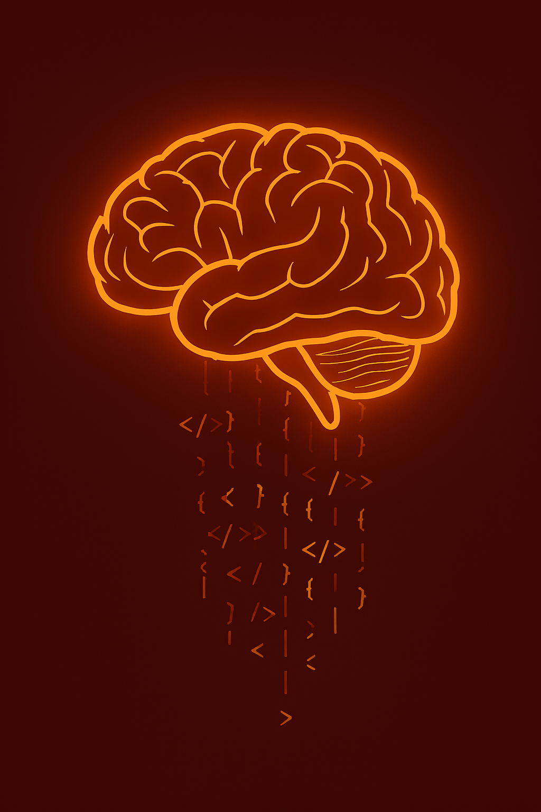

El cerebro humano es el órgano más complejo del cuerpo. Aunque representa solo el 2% del peso corporal, consume alrededor del 20% de la energía total. Está formado por aproximadamente 86 mil millones de neuronas.
Una curiosidad fascinante es que el cerebro no siente dolor, a pesar de ser el centro que lo procesa. Además, puede generar nuevas conexiones neuronales a lo largo de la vida, lo que se conoce como neuroplasticidad.
Si quieres saber más, visita National Geographic: El cerebro humano.